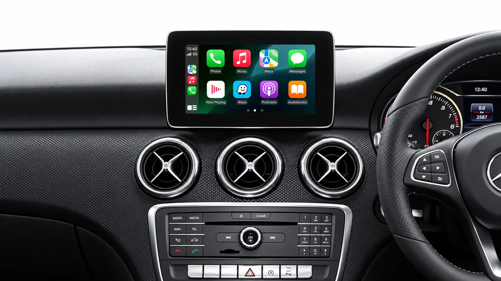

Multimedia upgrade
Mercedes-Benz Multimedia Upgrade
Activating the factory Apple CarPlay and Android Auto functionality on the existing screen without replacing it.
Compact luxury SUV
Mercedes-Benz GLA

Activating the factory Apple CarPlay and Android Auto functionality on the existing screen without replacing it.